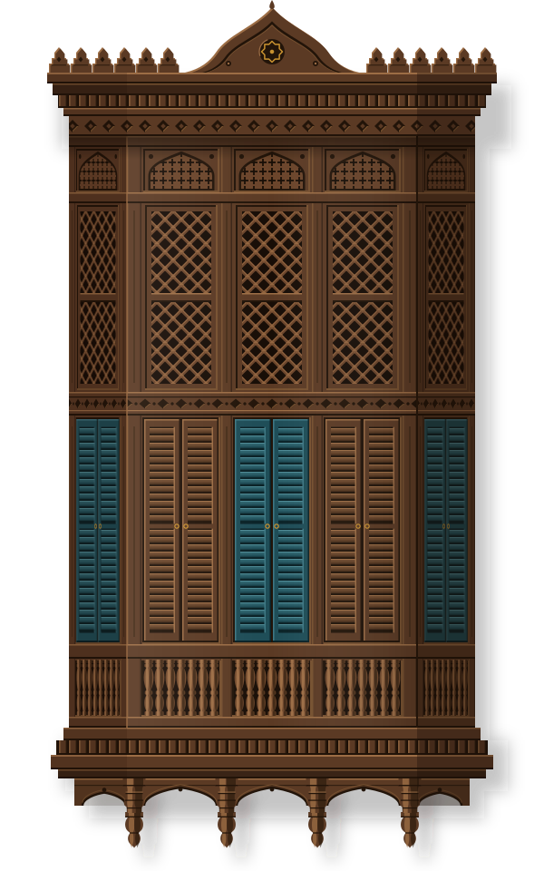

سوق العلوي، حي البلد، جدة التاريخيةSouq Al-Alawi, Al-Balad, Historic Jeddah
على بُعد دقيقتين سيرًا من بيت نصيفTwo minutes' walk from Naseef House
موقع تجريبي من تصميم Kayaba. تريد موقعًا مثله؟Demo site by Kayaba. Want one like this? راسلنيMessage me

البلد · جدة التاريخيةAl-Balad · Historic Jeddah
حيّاكم في مركاز البلدA Hijazi coffee house in old Jeddah
قهوة حجازية تُصبّ من الدلّة، بين جدران المنقبي وظلال الرواشين.Hijazi coffee poured from the dallah, in a coral-stone house in Al-Balad.
من باب مكةAt the gate to Makkah
منذ أن اتخذها الخليفة عثمان بن عفان رضي الله عنه ميناءً لمكة المكرمة سنة 647م، وجدة تفتح بابها للحجاج والتجار والضيوف. وفي سنة 2014 أدرجت اليونسكو «جدة التاريخية، بوابة مكة» في قائمة التراث العالمي.
Jeddah has welcomed travellers since 647 CE, when Caliph Uthman made it the port of Makkah. In 2014, UNESCO inscribed Historic Jeddah, the Gate to Makkah, as a World Heritage Site.
في أحد بيوتها القديمة، بين جدران المنقبي وظلال الرواشين، أعدنا للقهوة مجلسها. قهوتنا شقراء خفيفة بالهيل والزعفران، تُصبّ من الدلّة وتُقدَّم مع التمر، كما تعلّمناها من أهلنا.
We've made our home in one of Al-Balad's old houses: Red Sea coral stone, cooled by wooden roshans. The coffee is light and golden, fragrant with cardamom and saffron, and it always comes with dates.
حيّاكم في مركازنا: فنجانٌ يدعو أخاه، وحديثٌ يطيب مع نسمة البحر.
Take a seat on the mirkaz, stay for another cup, and let the sea breeze do the rest.
من مرتفعات جازان، حيث سجّلت اليونسكو زراعة البن الخولاني تراثًا إنسانيًا عام 2022.Grown in the Jazan highlands, where Khawlani coffee farming is UNESCO-listed heritage since 2022.
تحميص خفيف، وهيل وزعفران وقرنفل بمقادير موزونة، ونار هادئة لا تُستعجل.A light roast with cardamom, saffron and clove, measured by hand and never rushed.
جدران من حجر البحر الأحمر، ورواشين تُدخل النسيم وتحجب الشمس وتصون الخصوصية.Thick coral-stone walls and roshans that let the breeze in and keep the sun out.
لمحاتGlimpses
رسومات من بيتنا والحارات حوله: القهوة، والرواشين، وسهر الليل.Illustrated moments from our house and the lanes around it.
الموقع والمواعيدVisit
نحن في قلب حارات البلد، على خطوات من سوق العلوي.Tucked into Al-Balad's old lanes, steps from Souq Al-Alawi.
على بُعد دقيقتين سيرًا من بيت نصيفTwo minutes' walk from Naseef House
مفتوح الآنOpen now مغلق الآنClosed now يغلق الساعةCloses at يفتح الساعةOpens at
في رمضان نفتح من المغرب حتى السحور، ونعلن المواعيد الدقيقة على حساباتنا.In Ramadan we open from sunset to suhoor; exact times are posted on our socials.